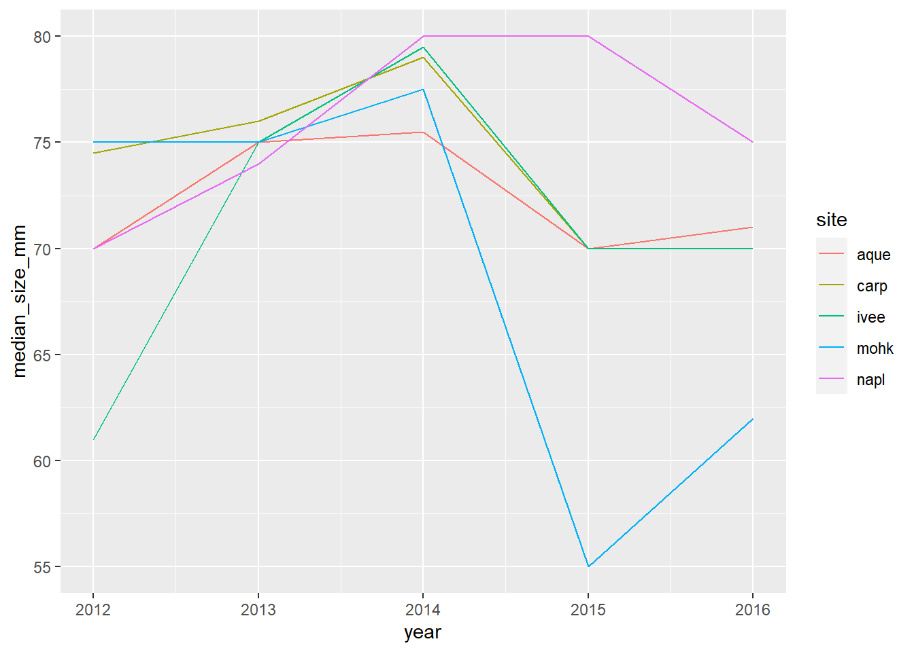
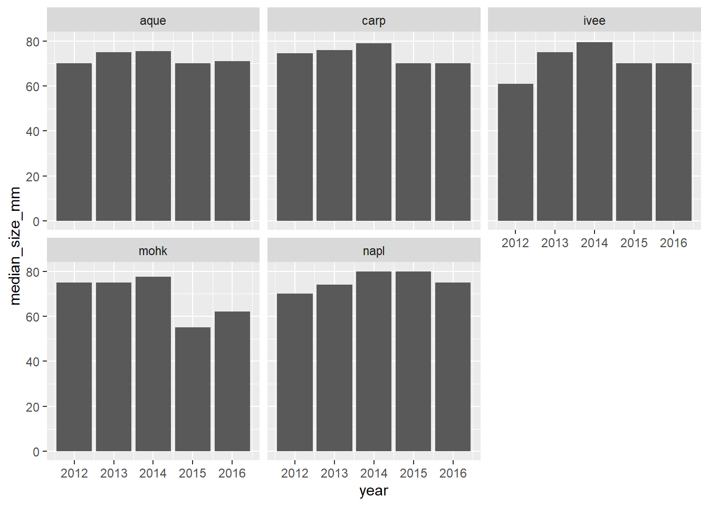
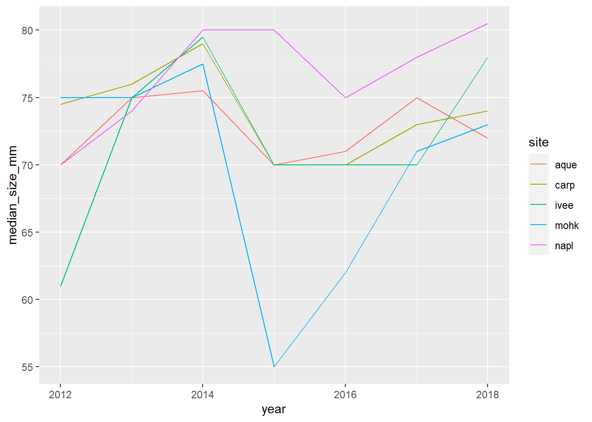
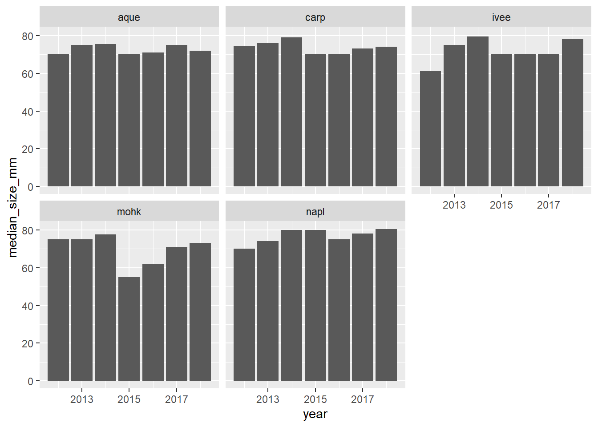

Pivot Tables with dplyr
`summarise()` has grouped output by 'site'. You can override using the
`.groups` argument.# A tibble: 35 × 3
# Groups: site [5]
site year count_by_year
<chr> <dbl> <int>
1 aque 2012 38
2 aque 2013 32
3 aque 2014 100
4 aque 2015 83
5 aque 2016 48
6 aque 2017 67
7 aque 2018 54
8 carp 2012 78
9 carp 2013 93
10 carp 2014 79
# … with 25 more rows`summarise()` has grouped output by 'site'. You can override using the
`.groups` argument.# A tibble: 35 × 5
# Groups: site [5]
site year count_by_siteyear mean_size_mm sd_size_mm
<chr> <dbl> <int> <dbl> <dbl>
1 aque 2012 38 71 10.2
2 aque 2013 32 72.1 12.3
3 aque 2014 100 76.9 9.32
4 aque 2015 83 68.5 12.6
5 aque 2016 48 68.7 12.5
6 aque 2017 67 73.9 11.9
7 aque 2018 54 71.7 8.14
8 carp 2012 78 74.4 14.6
9 carp 2013 93 76.6 8.71
10 carp 2014 79 79.1 8.57
# … with 25 more rows`summarise()` has grouped output by 'site'. You can override using the
`.groups` argument.| site | year | count_by_siteyear | mean_size_mm | sd_size_mm | median_size_mm |
|---|---|---|---|---|---|
| aque | 2012 | 38 | 71.00000 | 10.150223 | 70.0 |
| aque | 2013 | 32 | 72.12500 | 12.262584 | 75.0 |
| aque | 2014 | 100 | 76.92000 | 9.321074 | 75.5 |
| aque | 2015 | 83 | 68.45783 | 12.555536 | 70.0 |
| aque | 2016 | 48 | 68.68750 | 12.510687 | 71.0 |
| aque | 2017 | 67 | 73.89552 | 11.891089 | 75.0 |
| aque | 2018 | 54 | 71.68148 | 8.136525 | 72.0 |
| carp | 2012 | 78 | 74.35897 | 14.616282 | 74.5 |
| carp | 2013 | 93 | 76.56989 | 8.709562 | 76.0 |
| carp | 2014 | 79 | 79.08974 | 8.569329 | 79.0 |
| carp | 2015 | 90 | 70.65556 | 14.646517 | 70.0 |
| carp | 2016 | 231 | 68.90476 | 12.470122 | 70.0 |
| carp | 2017 | 705 | 72.22979 | 13.209134 | 73.0 |
| carp | 2018 | 343 | 74.50146 | 10.550318 | 74.0 |
| ivee | 2012 | 26 | 66.07692 | 12.092719 | 61.0 |
| ivee | 2013 | 40 | 73.77500 | 7.640941 | 75.0 |
| ivee | 2014 | 132 | 76.02273 | 17.860984 | 79.5 |
| ivee | 2015 | 361 | 69.80332 | 17.470534 | 70.0 |
| ivee | 2016 | 193 | 71.61658 | 13.450454 | 70.0 |
| ivee | 2017 | 606 | 71.43802 | 14.327700 | 70.0 |
| ivee | 2018 | 946 | 76.64799 | 12.219759 | 78.0 |
| mohk | 2012 | 83 | 77.25301 | 10.587433 | 75.0 |
| mohk | 2013 | 15 | 71.86667 | 10.190098 | 75.0 |
| mohk | 2014 | 36 | 75.75000 | 10.038142 | 77.5 |
| mohk | 2015 | 296 | 59.19932 | 16.770357 | 55.0 |
| mohk | 2016 | 210 | 63.01286 | 11.875763 | 62.0 |
| mohk | 2017 | 178 | 72.00000 | 9.280318 | 71.0 |
| mohk | 2018 | 164 | 72.41463 | 9.521627 | 73.0 |
| napl | 2012 | 6 | 73.00000 | 11.747340 | 70.0 |
| napl | 2013 | 63 | 75.31746 | 12.989854 | 74.0 |
| napl | 2014 | 163 | 79.51572 | 9.556531 | 80.0 |
| napl | 2015 | 270 | 78.24074 | 12.438899 | 80.0 |
| napl | 2016 | 127 | 74.39370 | 10.732060 | 75.0 |
| napl | 2017 | 112 | 76.23214 | 11.388300 | 78.0 |
| napl | 2018 | 298 | 80.48322 | 9.322218 | 80.5 |
There are 6366 total lobsters included in this report.
`summarise()` has grouped output by 'site'. You can override using the
`.groups` argument.
Saving 7 x 5 in image
Saving 7 x 5 in image
summarise() regrouping output by ‘site’ (override with .groups argument)
Saving 7 x 5 in image
Saving 7 x 5 in image